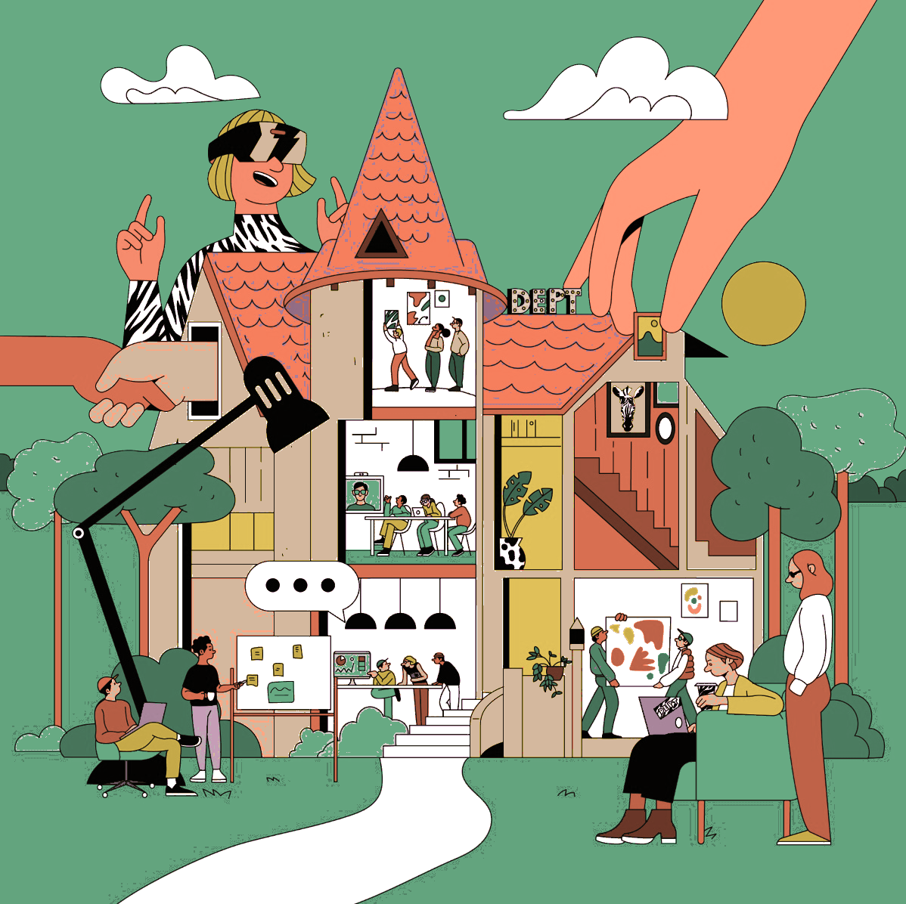

The brand operating system that turns one founder, one idea, and zero assets into a complete brand running across 20 specialised agents.
A connected system, not a toolkit. The output of every tool becomes the intelligence that powers the next — so nothing has to be re-explained, ever.

Our work was featured by
5 minutes. No credit card. A real brand diagnosis at the end.